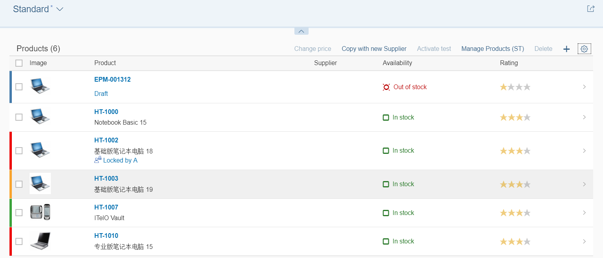

Highlighting Line Items Based on Criticality
You can add semantic highlights to line items in tables, based on their criticiality.
The figure below shows an example of this:

To do so, add a LineItem criticality annotation for the line items of the entity type that is used by a table, as follows:
If this annotation has been defined based on the criticality value received for the corresponding line item, the following highlights are displayed:
-
0 - None (no color)
-
1 - Error (red)
-
2 - Warning (yellow)
-
3 - Success (green)